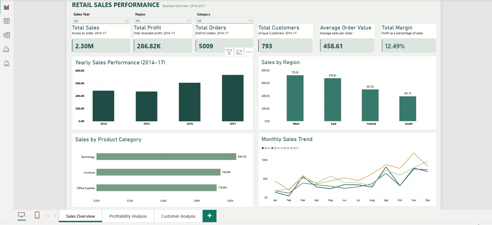

ASPIRING DATA ANALYST
Hi, I'm Ananya S.
Turning Data Into Meaningful Insights.
BCA (Hons. with Research and specialization in Artificial intelligence) graduate passionate about data analytics, business intelligence and discovering meaningful patterns through data.
GET TO KNOW ME
About Me
I'm a BCA graduate with Honours and Research specialization in Artificial Intelligence. I'm passionate, interested in using data to understand business problems and support better decisions.
I enjoy exploring datasets, identifying patterns, and transforming raw information into meaningful insights through data analysis and visualisation.
I've worked with SQL Server and Power BI to develop an end-to-end Retail Sales Performance Dashboard. I'm continuously expanding my skills in data analytics and programming.
WHAT I WORK WITH
My Skills
Tools and technologies I use for data analysis, visualisation and problem-solving.
SQL
SQL Server, Joins, Subqueries, Views, Aggregations
Power BI
Data Modelling, DAX, Interactive Dashboards
Microsoft Excel
Data Cleaning, Formulas, Data Analysis
Python
Fundamentals and beginner-level programming
Data Analytics
Exploratory Data Analysis, Business Insights
MY WORK
Featured Projects
A collection of my work in data analytics, machine learning and artificial intelligence.

DATA ANALYTICS
Retail Sales Performance Dashboard
An end-to-end retail sales analysis project exploring sales trends, product profitability, regional performance and customer behaviour using SQL Server and Power BI.
View on GitHub ↗AI & COMPUTER VISION
Video-Based Anomaly Detection
Developed a web application that processes uploaded video clips using YOLOv8 to detect weapons such as guns and knives and return relevant detection metadata.
View on GitHub ↗DEEP LEARNING
Text Classification using TensorFlow
Built a sentiment classification model to categorise IMDB movie reviews as positive or negative using pretrained text embeddings.
View on GitHub ↗DATA ANALYTICS
Data Visualization
Analysed population distribution across different age groups and genders using graphical visualisations to identify demographic patterns.
View on GitHub ↗DATA ANALYTICS
Exploratory Data Analysis
Performed data cleaning and exploratory analysis on datasets including Titanic, investigating relationships and identifying patterns and trends.
View on GitHub ↗MACHINE LEARNING
Pet Breed Image Classification
Developed an image classification project to identify dog and cat breeds using the Oxford-IIIT Pet Dataset.
View on GitHub ↗MACHINE LEARNING
Landmark Detection
Explored machine learning and image processing techniques to develop a landmark detection project using a Kaggle dataset.
View on GitHub ↗DATA ANALYTICS
TMDB Movie Data Analysis
Performed data cleaning and exploratory analysis to investigate movie popularity, revenue, genre distribution and the relationship between budget and revenue.
View on GitHub ↗MY JOURNEY
Certificates & Achievements
Certifications
Game Development using Pygame
GUVI Geek Networks, IITM Research Park
Introduction to Deep Learning
Great Learning
ESG Virtual Experience Program
Forage
Code Vipassana – Season 5
Google Developer Groups
Entrepreneurial Management
Great Learning
OPSWAT Data Transfer Security Associate
OPSWAT Academy
Presentation Skills
TCS iON
Achievements
Research Paper – ICONAT 2026
Research paper accepted for presentation at the 5th International Conference on Advanced Networks and Telecommunications (ICONAT 2026), with conference proceedings publication.
2nd Place – AI Image Generation Competition
Secured second position in a university-level AI image generation competition.
Problemathon – Final Round
Selected for the final round and secured 42nd position with the team.
Published Author
Published my first book, "The Enigmatic Portrait: With the Brush and Beyond", available on Amazon and Flipkart.
ACADEMIC BACKGROUND
Education
BCA – Artificial Intelligence
Honours with Research
Nitte Institute of Professional Education
Mangalore, Karnataka
CGPA: 8.62
Class 12 – Science Stream
Jawahar Navodaya Vidyalaya
Udupi, Karnataka
Percentage: 76.2%
GET IN TOUCH
Let's Connect
I'm open to opportunities, collaborations, and conversations related to data analytics and technology. Feel free to reach out!
anuaniananya@gmail.com
Phone
+91 9743563962